齿轮（Gear）-变向
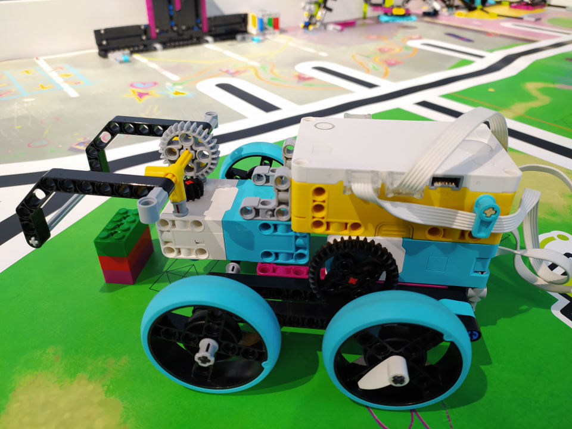
schedule90 分钟
stars初级（Beginner）
face3-6 年级
一. 齿轮变向探究（Explore）
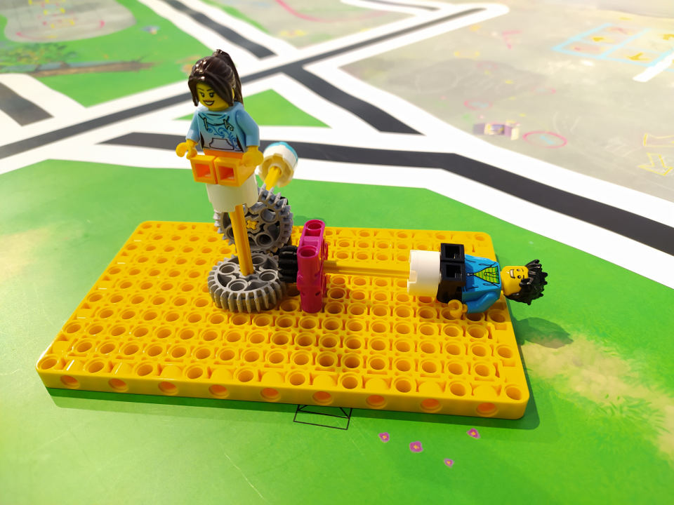
1.1 齿轮与齿轮（Gear）
1. 【观察现象、得出结论】齿轮间垂直齿合，可以改变运行方向。
1.2 齿轮与齿条（Rack）
1. 【观察现象、得出结论】齿轮与齿条齿合，可以让齿条做直线运动。
二. 任务一：搭建齿轮传动小车
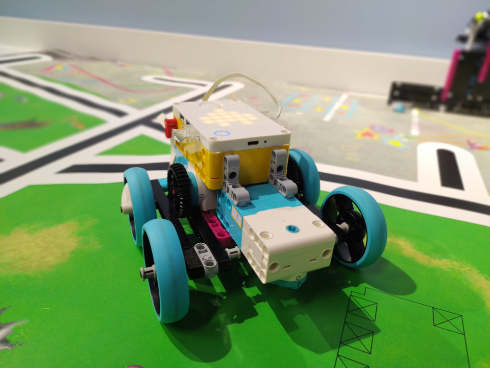
2.1 小车基座
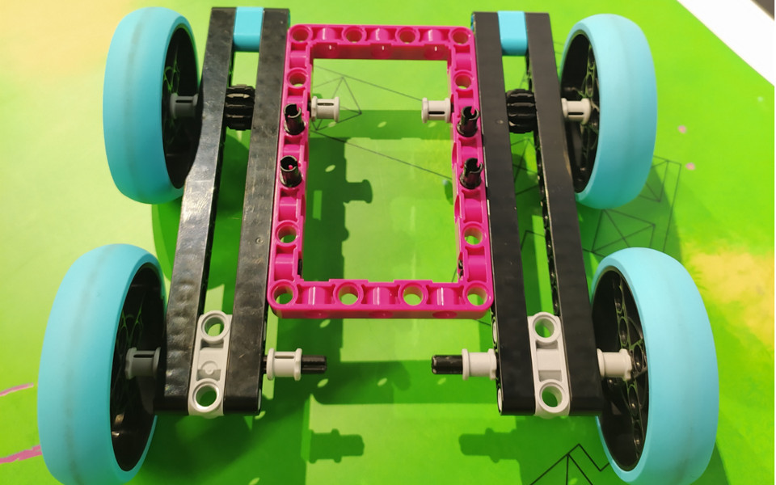
2.2 小车身体
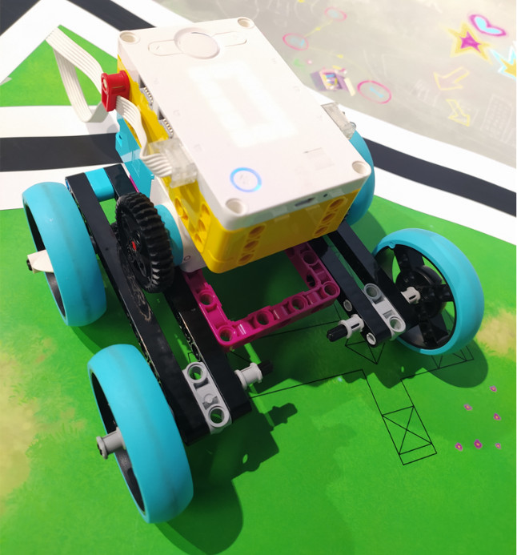
2.3 底部加固
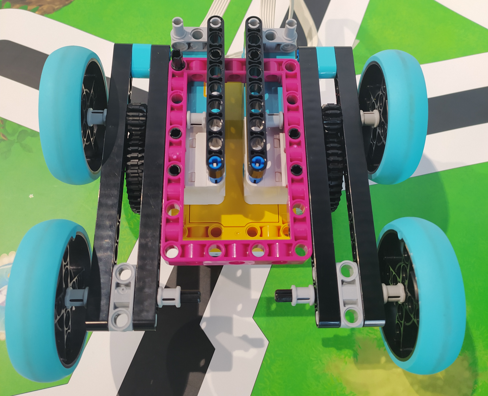
2.4 加装大电机
三. 任务二：搬运机器臂
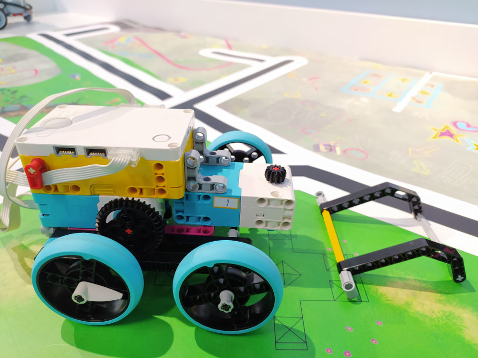
如何把机器臂安装到小车上，并能通过程序控制机器臂上下动作呢？
三. 任务二：搬运机器臂
机械臂安装。
三. 任务二：搬运机器臂
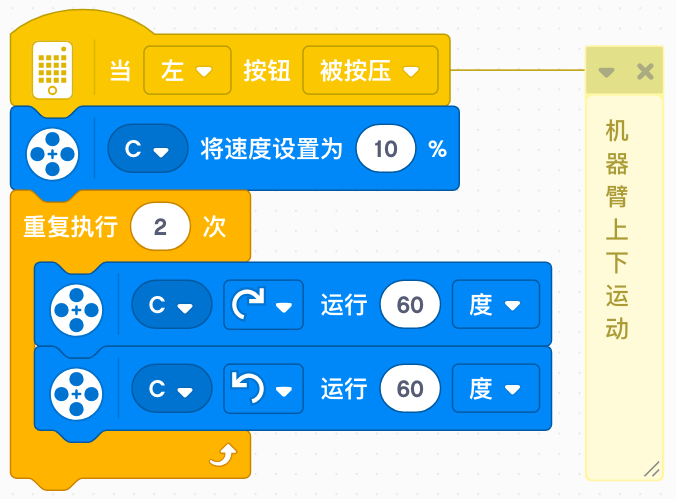
机械臂上下动作。
四. 任务三：搬砖
在小车前放置一块砖，让小车把砖往后移 80 厘米。
四. 任务三：搬砖
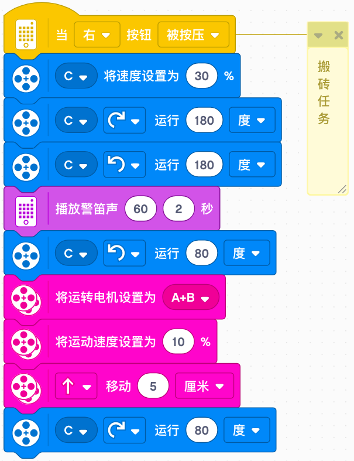
五. 任务四：升降机
搭建升降机，并编程，当左按钮按下后往上升，当右按钮按下后往下降。
齿轮部分
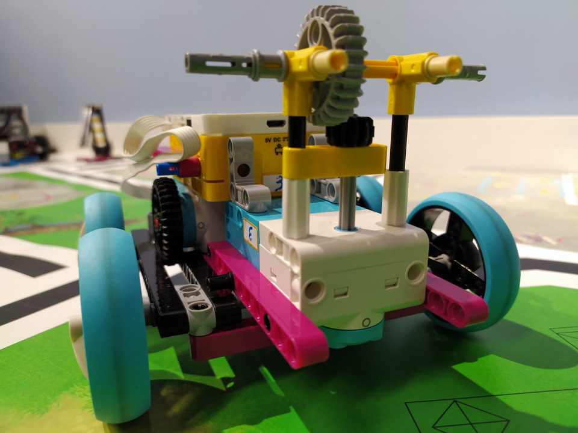
框架部分
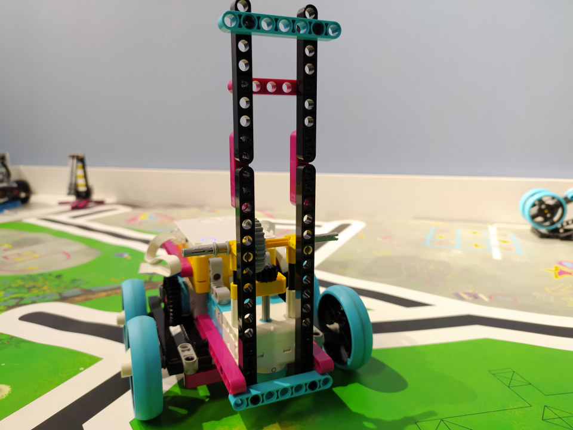
齿条部分
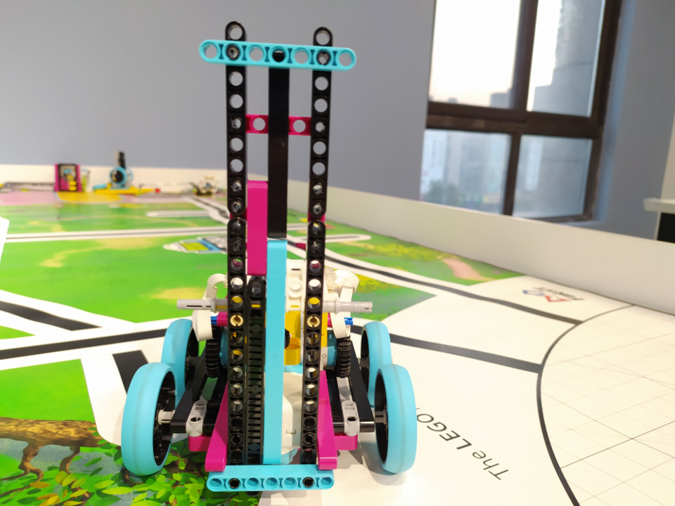
程序
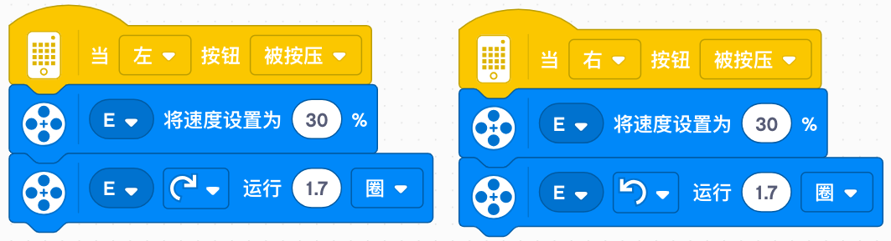
六. 分享、奖励、提问

1. 【分享】分享你的各种想法吧。
2. 【奖励】完成个人或团队任务，各奖励 10 分。
3. 【提问】每人必须至少提一个问题。
七. 拓展（Extend）

1. 【模型拓展】个性化改装模型。
2. 【编程拓展】个性化改写程序。